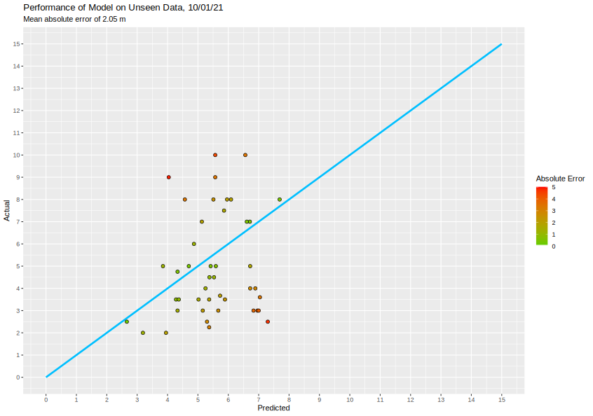

The Initiative
Why?
Initially the forecasting model was taken up as personal project to learn more about how the visibility of the water was affected by various factors. It was then further
developed to form this website so it could be shared with others.
How?
The forecasting model is a machine learning model built within the keras framework in R. It takes into account the; wind magnitude, swell height, swell period, water temperature,
rainfall in the past week and days since the last rainfall. Other factors will be taken into account that will hopefully increase the accuracy of the predictions in the near
future.
Does it Work?
The performance of the forecasting model can be seen in the below plot, where the predicted value is plotted against the actual value. A correct prediction lies on the blue line.
The fill of the points indicates the absolute error of the prediction in metres.

© Rohan St Hill 2020